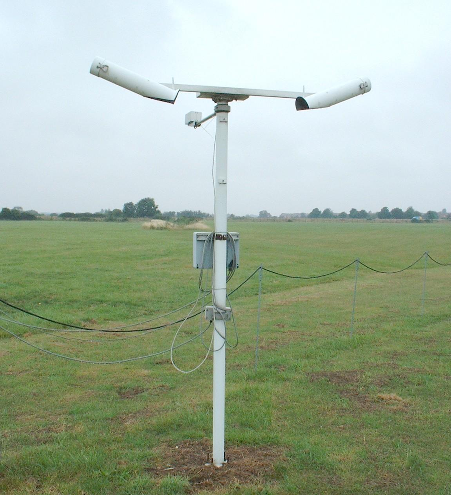

Belfort Model 6230A Visibility Sensor

Purpose of instrument:-
This instrument is used for the determination of the visible range through the air. This is defined as the
maximum distance, during daylight, at which it is possible to discern a prominent, dark object against the horizon.
Visibility is limited by the presence of water vapour and particles in the atmosphere.
Principles of operation:-
The Belfort 6230A visibility sensor is a forward scatter device, which measures the amount of light
scattered from a xenon flash lamp. From this, the extinction coefficient (s)
of the sample of air can be determined (it is assumed that s is the same as the
scattering coefficient since the amount of light absobed over the path length of the sensor will be
negligible) and a value for the visibility extrapolated.
This measurement is valid for any scattering medium (eg, fog,dust,haze,rain).
The sensor is mounted at a height of 2m above the ground and the size of the scattering volume is
0.02m3.
Measurements are made at a rate of 2Hz, and a running mean over a period of one minute is output.
Extinction coefficient measurements in the range of 579 Km
-1 to 0.05 Km-1 can be achieved by the sensor,
which corresponds to a visual range of 15 m to 59.6 km.
For more information on this instrument, see the manufacturer's website:
http://www.belfortinstrument.com
Calibration:-
Calibration of the instrument is carried out annually. This is primarily done to compensate for ageing of the
xenon flash bulb. The calibration procedure involves placing neutral density filters of known transmittances
over the transmitter and receiver windows, and a scattering plate in between them. This effectively simulates
a known scattering coefficient, from which the instrument is able to calculate the calibration coefficients.
Maintenance:-
Routine maintenance, involves the inspection and cleaning of the receiver and transmitter windows.
This is typically carried out on a weekly basis. Dirt on the windows, and also cobwebs inside the window
hoods, can degrade the performance of the instrument.